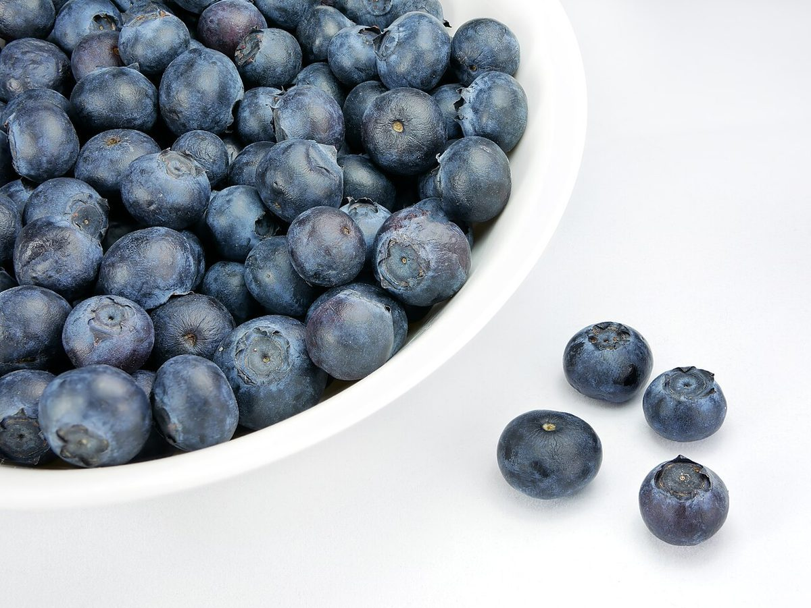

trois / 03
メニュー
メニュー・価格は準備中です。ご提供いただき次第、掲載します。
- unお菓子の紹介準備中
- deux季節のおすすめ準備中
- troisギフト・詰め合わせ準備中
- quatreご予約・お取り置き準備中
上の項目名は掲載枠の例です。実際に取り扱いがあるかは未確認で、内容はお店のご提供後に決まります。



trois / 03
メニュー・価格は準備中です。ご提供いただき次第、掲載します。
上の項目名は掲載枠の例です。実際に取り扱いがあるかは未確認で、内容はお店のご提供後に決まります。
